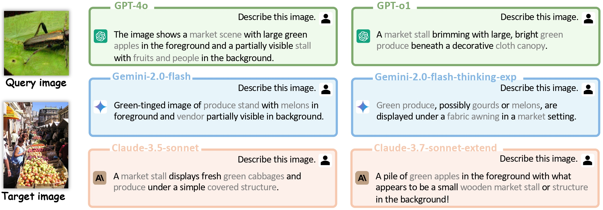
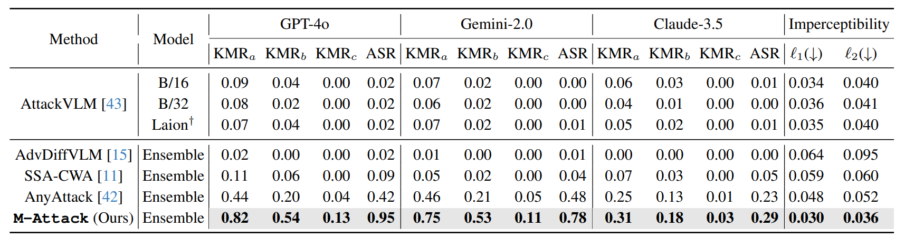
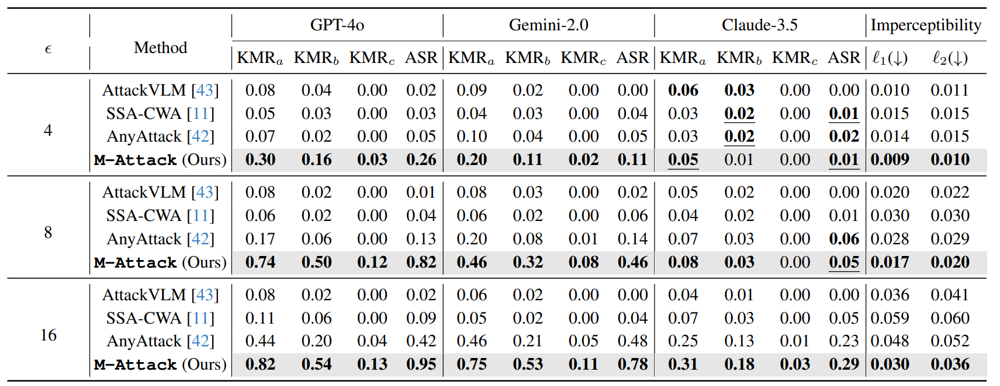

A Frustratingly Simple Yet Highly Effective Attack
Baseline: Over 90% Success Rate Against the Strong
Black-box Models of GPT-4.5/4o/o1
Mohamed bin Zayed University of Artificial Intelligence

Figure 1: Example responses from commercial LVLMs to targeted attacks generated by our method.
Overview of our method

Figure 2: Illustration of our proposed framework. Our method is based on two components: Local-to-Global or Local-to-Local Matching (LM) and Model Ensemble (ENS). LM is the core of our approach, which helps to refine the local semantics of the perturbation. ENS helps to avoid overly relying on single models embedding similarity, thus improving attack transferability.
Experimental Results

Table 1: Comparison with the state-of-the-art approaches.

Table 2: Ablation study on the impact of ϵ.
Visualization of perturbations and adversarial samples

Figure 3: Left: visualization of perturbations generated by models with local-to-global matching.
The ensemble integrates these complementary strengths for high-quality perturbation. Right: visualization of perturbation generated by
other methods.

Figure 4: Visualization of adversarial samples generated by different methods.
BibTeX
@article{li2025frustratingly,
title={A frustratingly simple yet highly effective attack baseline: Over 90\% success rate against the strong black-box models of gpt-4.5/4o/o1},
author={Li, Zhaoyi and Zhao, Xiaohan and Wu, Dong-Dong and Cui, Jiacheng and Shen, Zhiqiang},
journal={arXiv preprint arXiv:2503.10635},
year={2025}
}